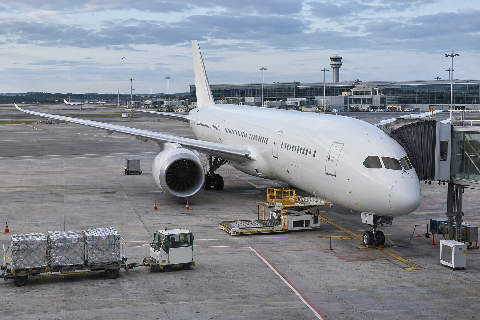

Operations / Explainer
Air India restores nonstop operation on four Delhi and Mumbai–New York routes
Removing Rome fuel stops cuts affected journeys by up to five hours. Frequencies, airports and aircraft differ by route.

A ticket sold as nonstop became a much longer day when a fuel stop in Rome was required. Air India said on November 15 that nonstop operation had been restored on all four routes from Delhi and Mumbai to JFK and Newark. Affected journeys of about 22 hours return to roughly 17 hours, a reduction of up to five hours.
A technical stop is an operational landing, such as for fuel, rather than a normal passenger connection. Pakistan airspace closure and restrictions in parts of the Middle East lengthened India–North America routings. Eased restrictions now allow the four services to operate without the Rome stop.
Delhi–JFK and Mumbai–JFK each operate daily. Delhi–Newark runs four times weekly and Mumbai–Newark three times weekly. JFK is in Queens while EWR is in New Jersey, so the ground trip can matter as much as the headline city.
Delhi services use A350-900s with 28 business, 24 premium economy and 264 economy seats. Mumbai services use refurbished 777-300ERs with eight first, 40 business and 280 economy seats.
Up to five hours is a comparison for services that needed refueling, not a guaranteed duration for every flight. Wind, routing and airspace can still change the result. Check the Non Stop label, flight number and total journey time.
Existing customers should also review the airport and seat map. An equipment or schedule change can affect paid seats, and separate U.S. connections still require immigration, baggage collection and recheck time. Future airspace conditions remain uncertain, so recheck status before departure.